WANFENG LAB
晚风研究所 · 个人概念品牌项目 · Sylvia／韩祎飒 · 14页
点击页面可查看大图；展开“本页文字”可阅读可编辑文字内容。
01 / 14品牌封面
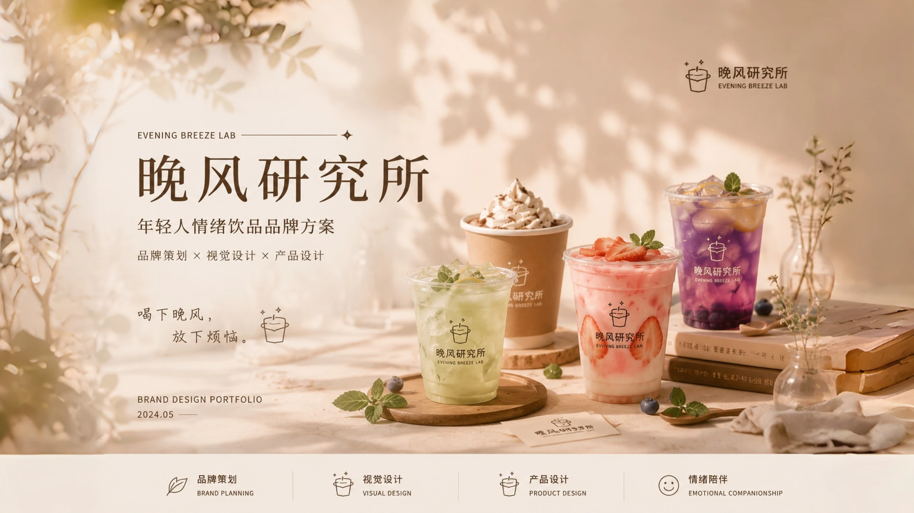
本页文字
晚风研究所：年轻人情绪饮品品牌方案。品牌策划、视觉设计与产品设计。封面为原始合成图。
02 / 14用户洞察
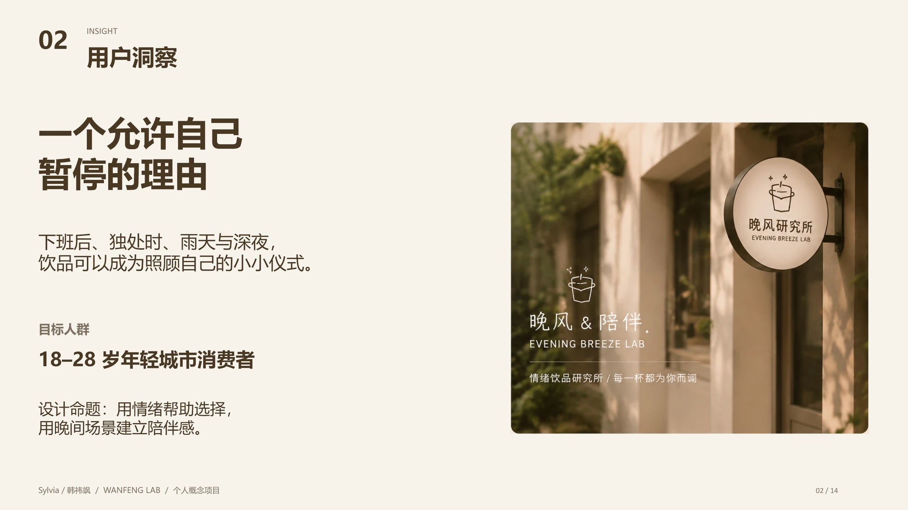
本页文字
02
INSIGHT
用户洞察
Sylvia／韩祎飒 / WANFENG LAB / 个人概念项目
02 / 14
一个允许自己
暂停的理由
下班后、独处时、雨天与深夜，
饮品可以成为照顾自己的小小仪式。
目标人群
18–28 岁年轻城市消费者
设计命题：用情绪帮助选择，
用晚间场景建立陪伴感。
03 / 14模拟研究框架
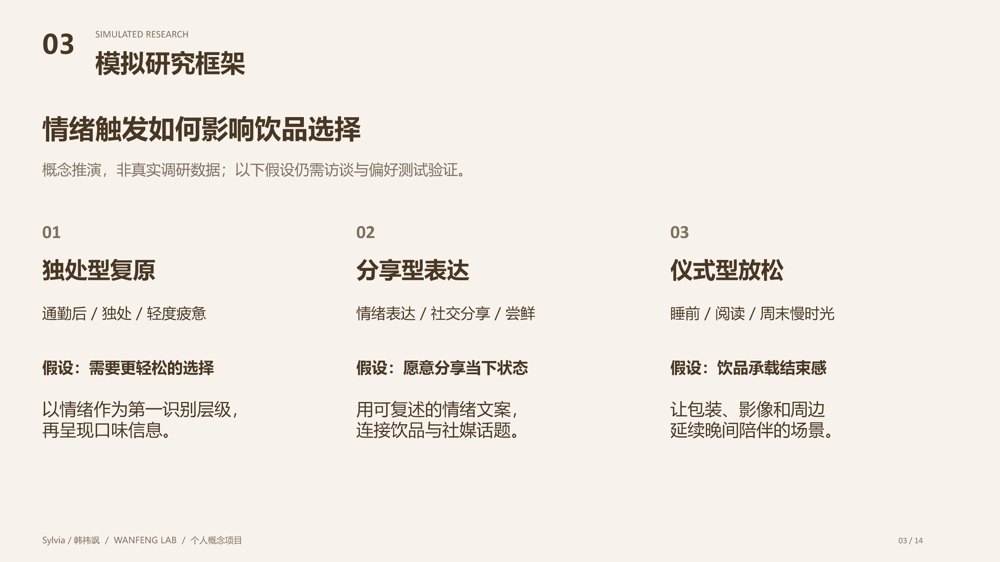
本页文字
03
SIMULATED RESEARCH
模拟研究框架
Sylvia／韩祎飒 / WANFENG LAB / 个人概念项目
03 / 14
情绪触发如何影响饮品选择
概念推演，非真实调研数据；以下假设仍需访谈与偏好测试验证。
01
独处型复原
通勤后 / 独处 / 轻度疲惫
假设：需要更轻松的选择
以情绪作为第一识别层级，
再呈现口味信息。
02
分享型表达
情绪表达 / 社交分享 / 尝鲜
假设：愿意分享当下状态
用可复述的情绪文案，
连接饮品与社媒话题。
03
仪式型放松
睡前 / 阅读 / 周末慢时光
假设：饮品承载结束感
让包装、影像和周边
延续晚间陪伴的场景。
04 / 14品牌概念
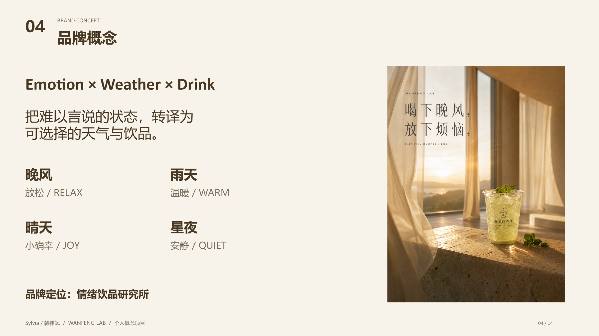
本页文字
04
BRAND CONCEPT
品牌概念
Sylvia／韩祎飒 / WANFENG LAB / 个人概念项目
04 / 14
Emotion × Weather × Drink
把难以言说的状态，转译为
可选择的天气与饮品。
晚风
放松 / RELAX
雨天
温暖 / WARM
晴天
小确幸 / JOY
星夜
安静 / QUIET
品牌定位：情绪饮品研究所
05 / 14视觉识别系统
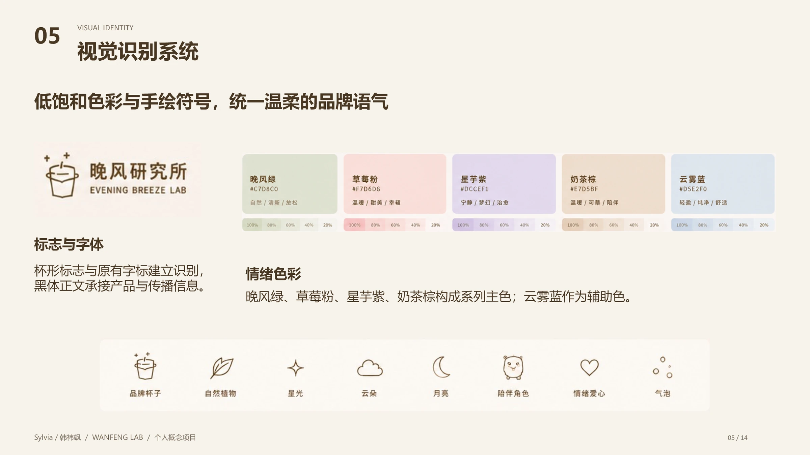
本页文字
05
VISUAL IDENTITY
视觉识别系统
Sylvia／韩祎飒 / WANFENG LAB / 个人概念项目
05 / 14
低饱和色彩与手绘符号，统一温柔的品牌语气
标志与字体
杯形标志与原有字标建立识别，
黑体正文承接产品与传播信息。
情绪色彩
晚风绿、草莓粉、星芋紫、奶茶棕构成系列主色；云雾蓝作为辅助色。
06 / 14情绪天气系统
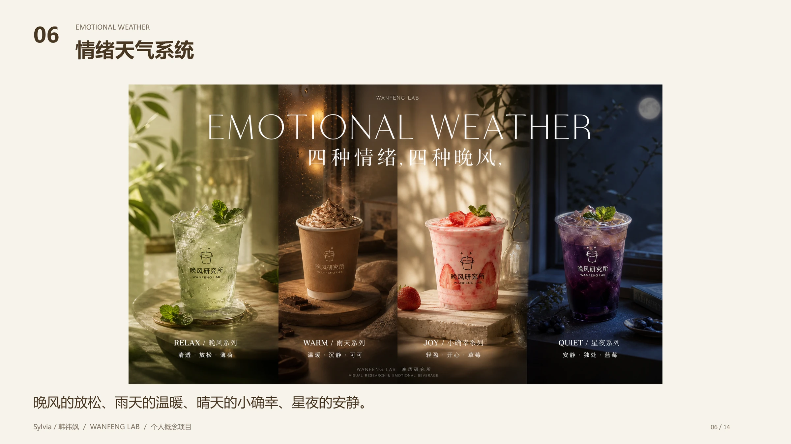
本页文字
06
EMOTIONAL WEATHER
情绪天气系统
Sylvia／韩祎飒 / WANFENG LAB / 个人概念项目
06 / 14
晚风的放松、雨天的温暖、晴天的小确幸、星夜的安静。
07 / 14产品与包装
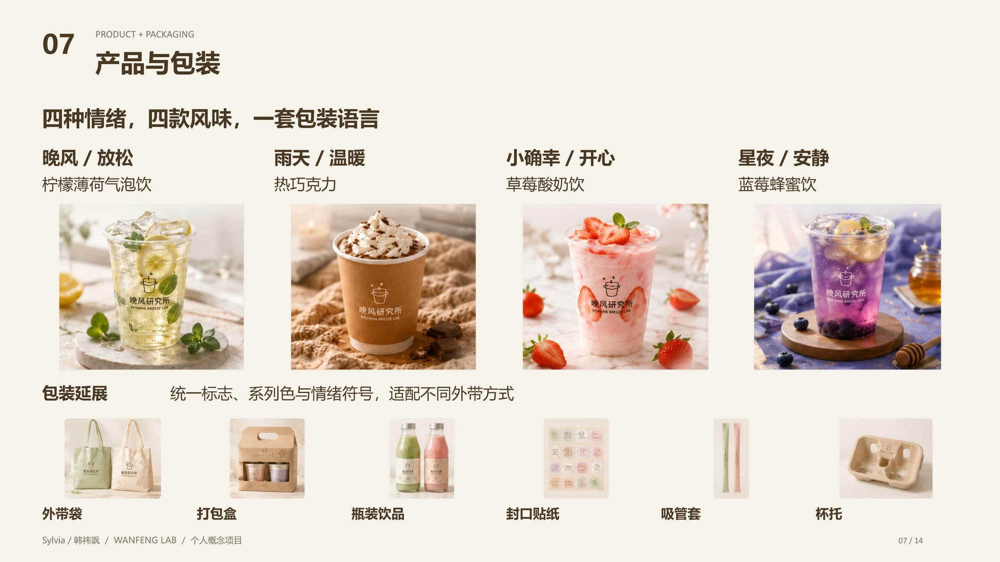
本页文字
07
PRODUCT + PACKAGING
产品与包装
Sylvia／韩祎飒 / WANFENG LAB / 个人概念项目
07 / 14
四种情绪，四款风味，一套包装语言
晚风 / 放松
柠檬薄荷气泡饮
雨天 / 温暖
热巧克力
小确幸 / 开心
草莓酸奶饮
星夜 / 安静
蓝莓蜂蜜饮
包装延展
统一标志、系列色与情绪符号，适配不同外带方式
外带袋
打包盒
瓶装饮品
封口贴纸
吸管套
杯托
08 / 14海报设计
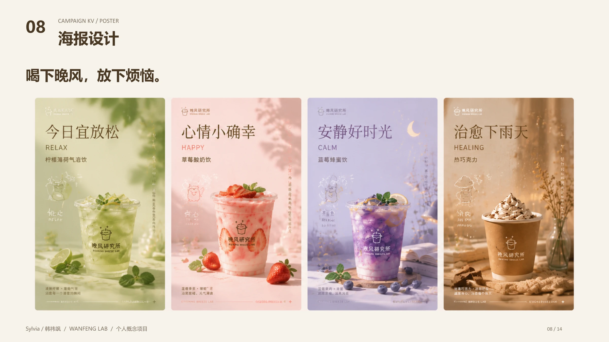
本页文字
08
CAMPAIGN KV / POSTER
海报设计
Sylvia／韩祎飒 / WANFENG LAB / 个人概念项目
08 / 14
喝下晚风，放下烦恼。
09 / 14品牌短片关键帧
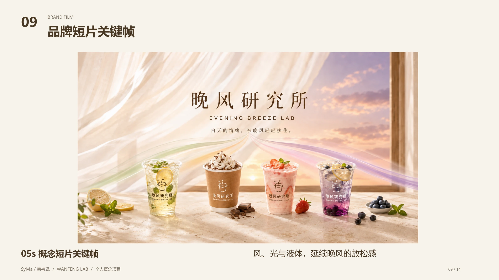
本页文字
09
BRAND FILM
品牌短片关键帧
Sylvia／韩祎飒 / WANFENG LAB / 个人概念项目
09 / 14
05s 概念短片关键帧
风、光与液体，延续晚风的放松感
10 / 14社媒视觉
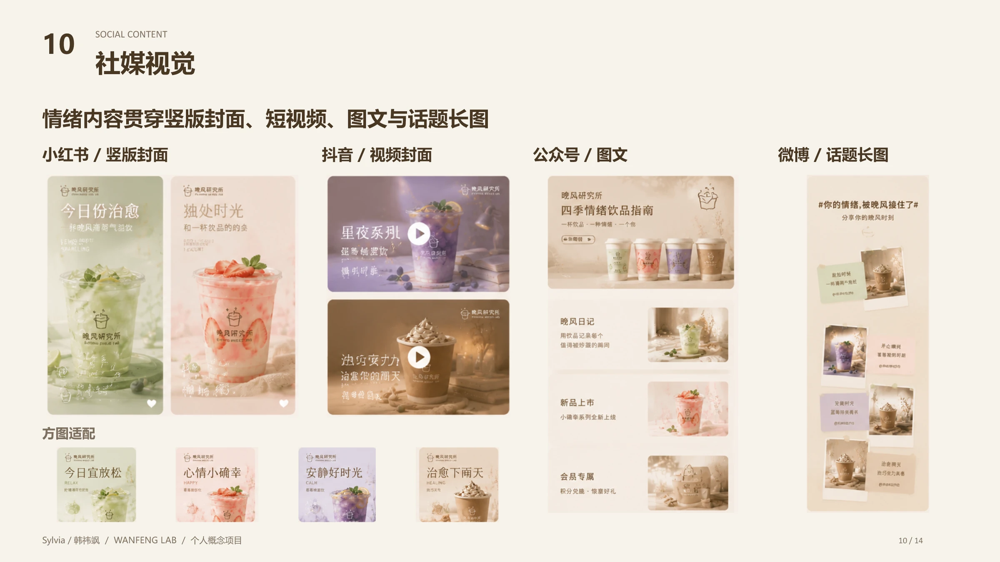
本页文字
10
SOCIAL CONTENT
社媒视觉
Sylvia／韩祎飒 / WANFENG LAB / 个人概念项目
10 / 14
情绪内容贯穿竖版封面、短视频、图文与话题长图
小红书 / 竖版封面
抖音 / 视频封面
公众号 / 图文
微博 / 话题长图
方图适配
11 / 14周边延展
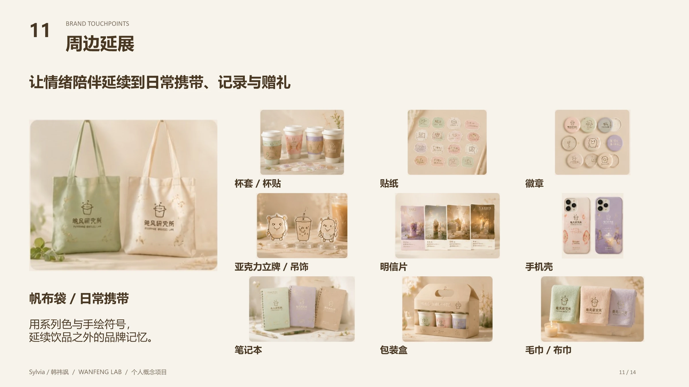
本页文字
11
BRAND TOUCHPOINTS
周边延展
Sylvia／韩祎飒 / WANFENG LAB / 个人概念项目
11 / 14
让情绪陪伴延续到日常携带、记录与赠礼
帆布袋 / 日常携带
用系列色与手绘符号，
延续饮品之外的品牌记忆。
杯套 / 杯贴
贴纸
徽章
亚克力立牌 / 吊饰
明信片
手机壳
笔记本
包装盒
毛巾 / 布巾
12 / 14传播路径
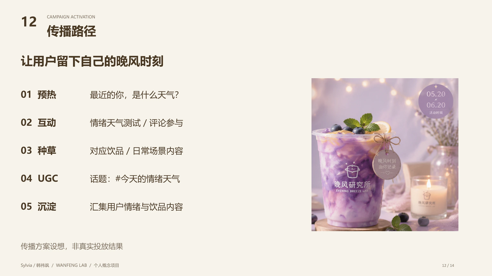
本页文字
12
CAMPAIGN ACTIVATION
传播路径
Sylvia／韩祎飒 / WANFENG LAB / 个人概念项目
12 / 14
让用户留下自己的晚风时刻
01 预热
最近的你，是什么天气？
02 互动
情绪天气测试 / 评论参与
03 种草
对应饮品 / 日常场景内容
04 UGC
话题：#今天的情绪天气
05 沉淀
汇集用户情绪与饮品内容
传播方案设想，非真实投放结果
13 / 14AIGC 内容生成方法
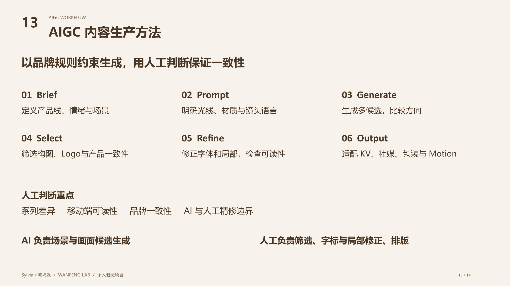
本页文字
13
AIGC WORKFLOW
AIGC 内容生产方法
Sylvia／韩祎飒 / WANFENG LAB / 个人概念项目
13 / 14
以品牌规则约束生成，用人工判断保证一致性
01 Brief
定义产品线、情绪与场景
02 Prompt
明确光线、材质与镜头语言
03 Generate
生成多候选，比较方向
04 Select
筛选构图、Logo与产品一致性
05 Refine
修正字体和局部，检查可读性
06 Output
适配 KV、社媒、包装与 Motion
人工判断重点
系列差异 移动端可读性 品牌一致性 AI 与人工精修边界
AI 负责场景与画面候选生成
人工负责筛选、字标与局部修正、排版
14 / 14复盘与品牌世界
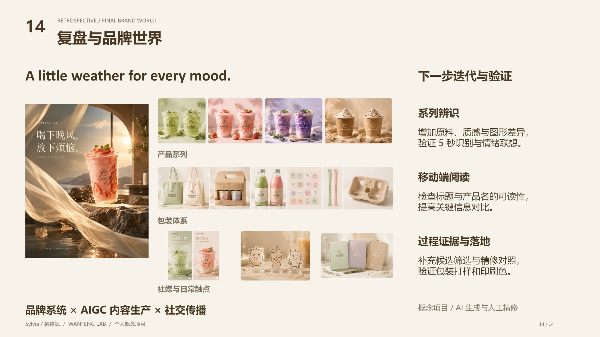
本页文字
14
RETROSPECTIVE / FINAL BRAND WORLD
复盘与品牌世界
Sylvia／韩祎飒 / WANFENG LAB / 个人概念项目
14 / 14
A little weather for every mood.
产品系列
包装体系
社媒与日常触点
品牌系统 × AIGC 内容生产 × 社交传播
下一步迭代与验证
系列辨识
增加原料、质感与图形差异，
验证 5 秒识别与情绪联想。
移动端阅读
检查标题与产品名的可读性，
提高关键信息对比。
过程证据与落地
补充候选筛选与精修对照，
验证包装打样和印刷色。
概念项目 / AI 生成与人工精修